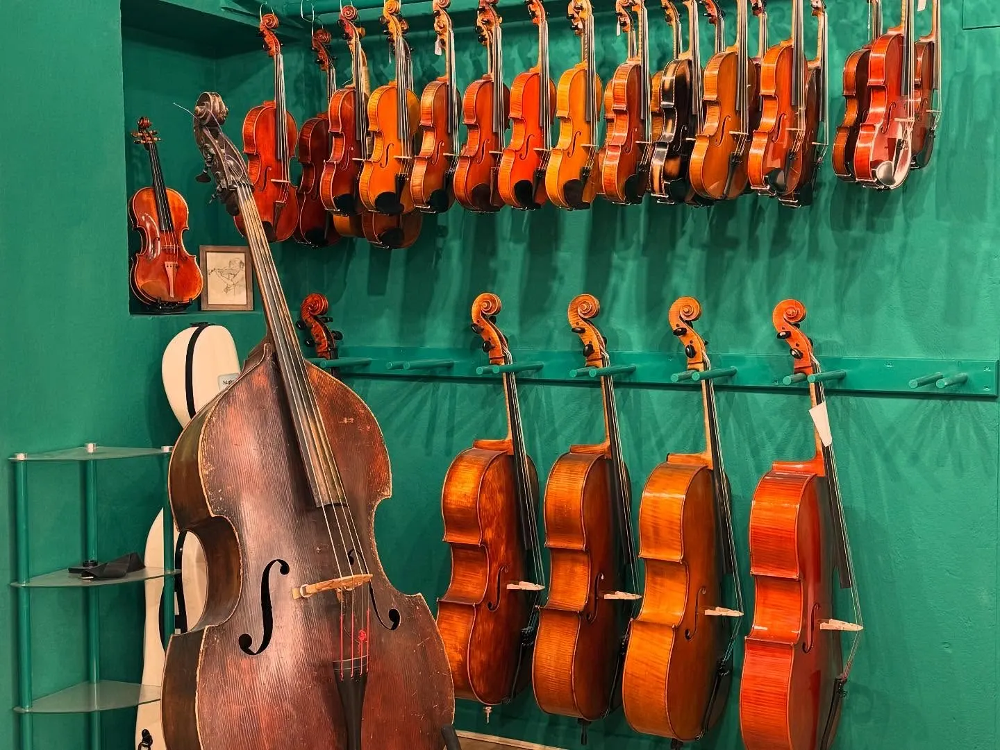
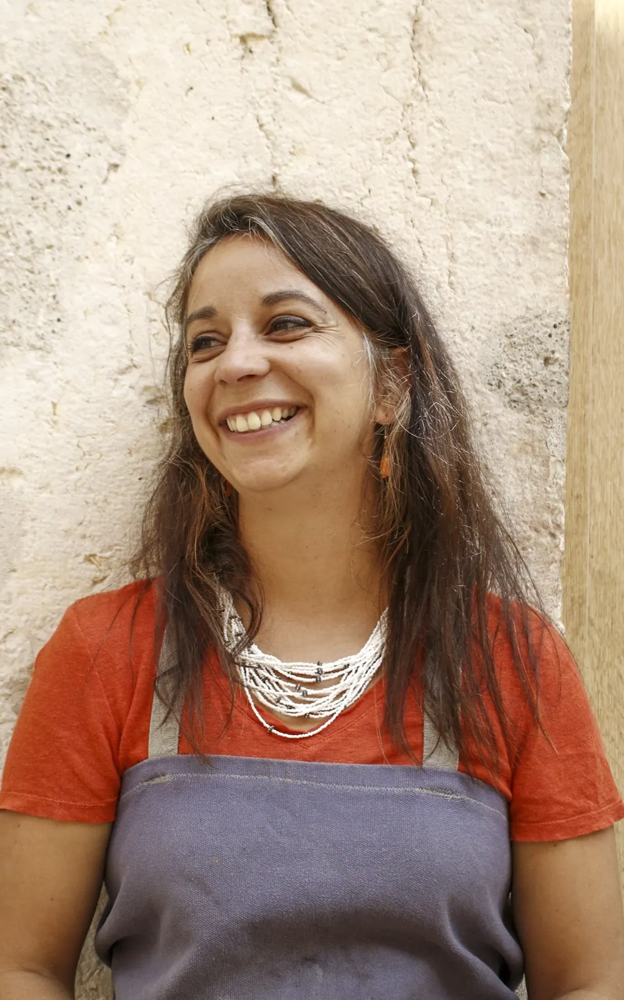
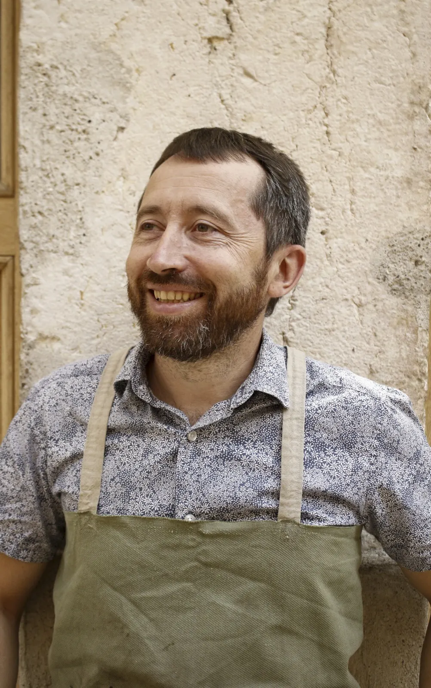
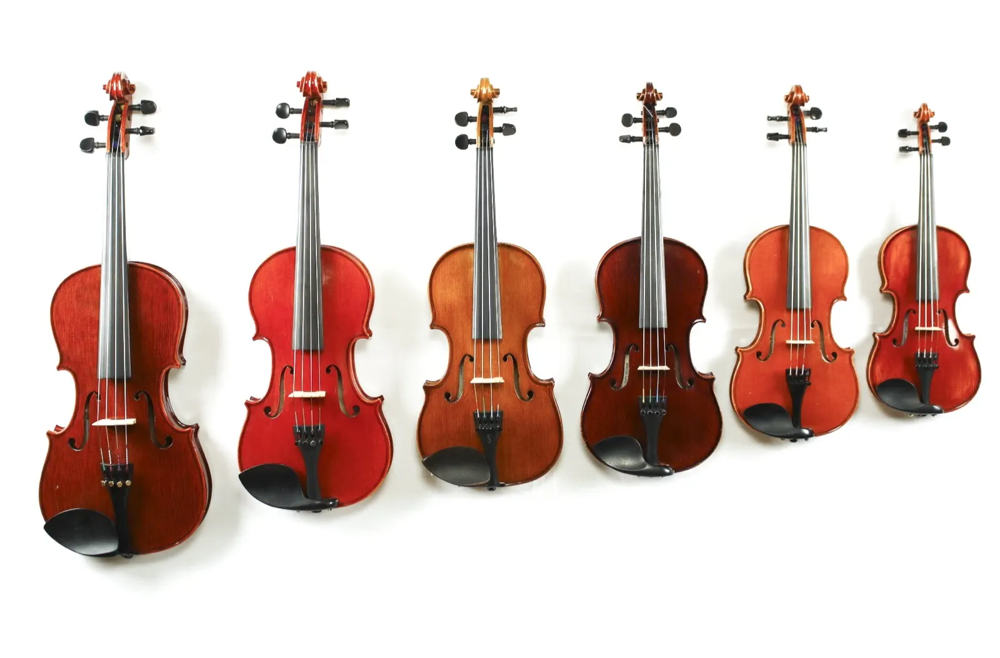
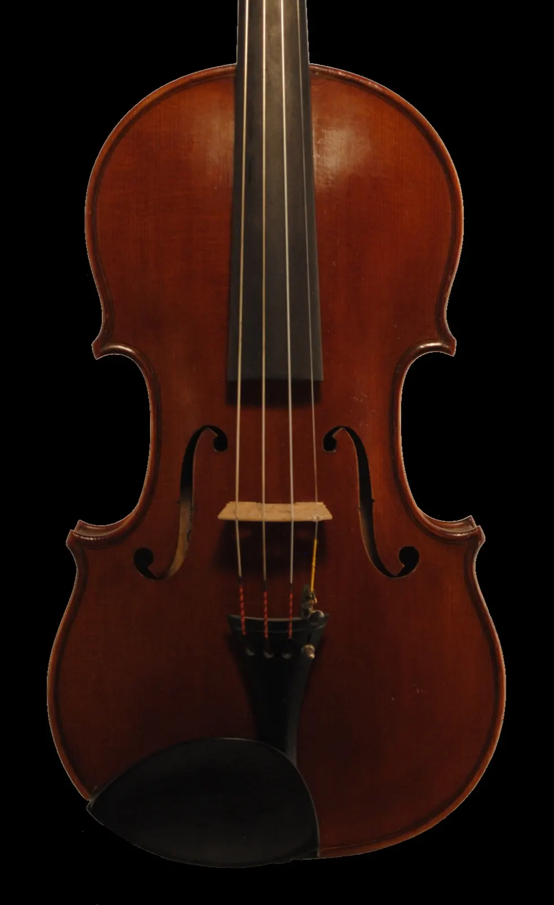
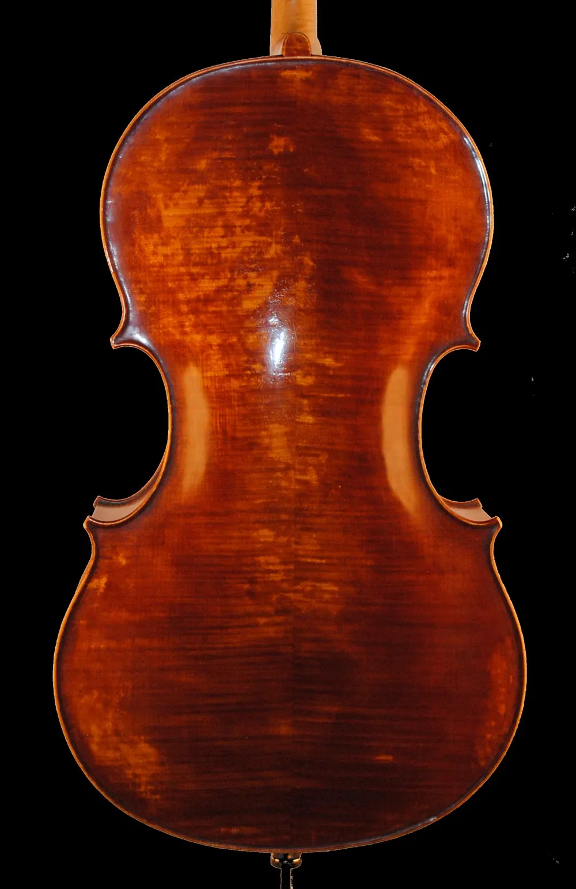
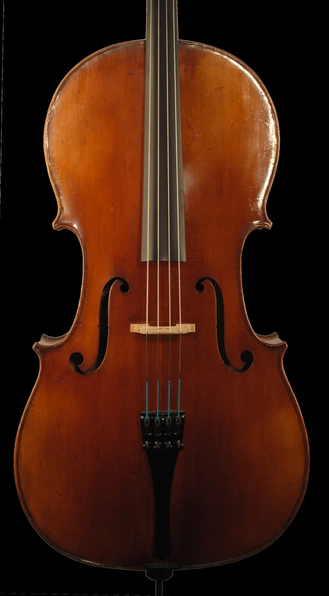
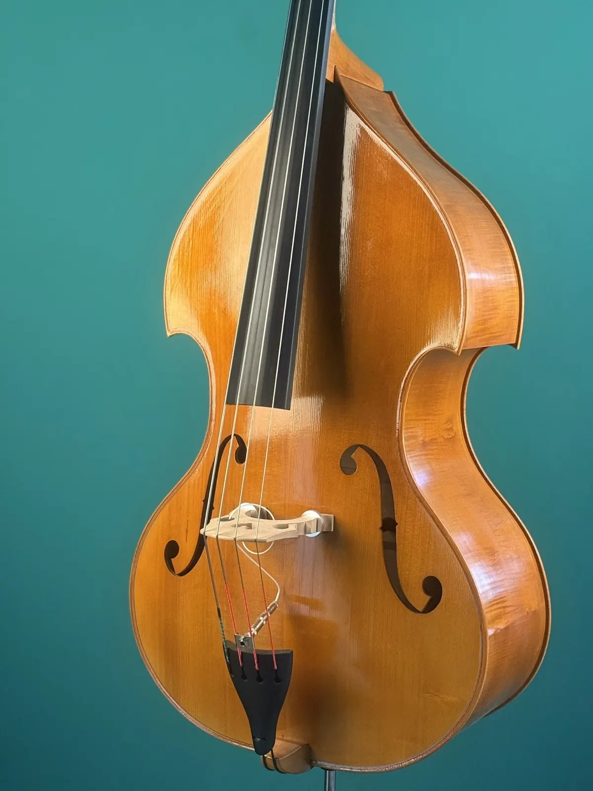
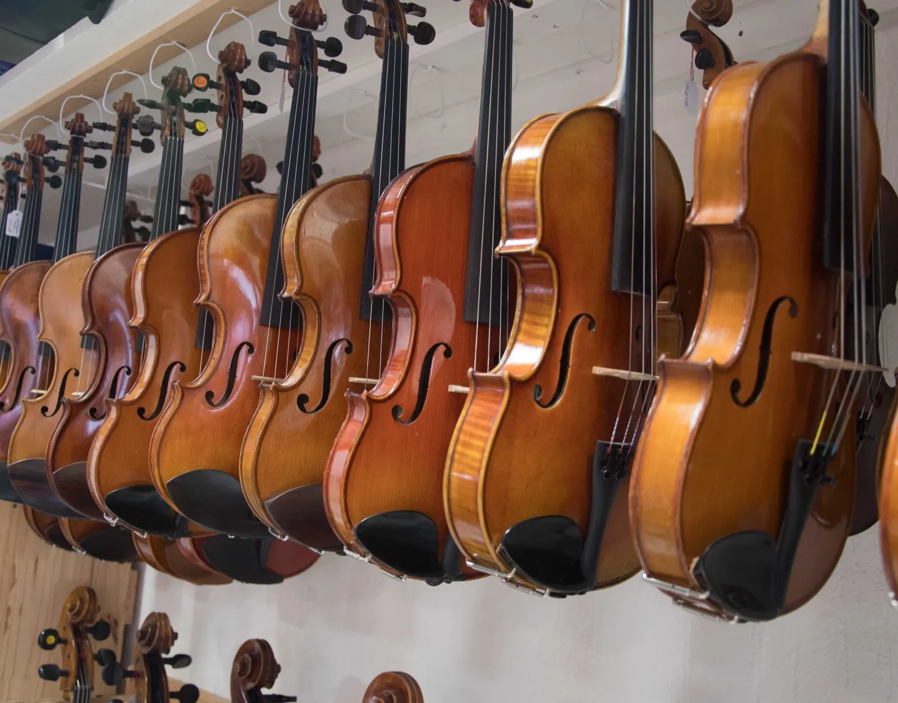

Luthiers au cœur de Vienne
Fabrication, achat, location, réglage, réparation et restauration de violons, altos, violoncelles et contrebasses. Plus de 25 ans d'expérience, et un atelier-magasin où l'on prend le temps de vous écouter et de vous laisser essayer.

- Plus de 25 ansde lutherie, de la fabrication à la restauration
- Le quatuorviolons, altos, violoncelles, contrebasses
- Dès 14 € par moisla location d'un violon, entretien compris
- Place Aristide Briandl'atelier-magasin, au centre de Vienne


Notre parcours de luthiers
Plus de 25 ans de lutherie, de la fabrication à la restauration d'instruments de grande qualité. Nous fabriquons des violons, des altos, des violoncelles et des contrebasses inspirés des grands maîtres italiens, et nous créons aussi de nouveaux modèles, à l'image de notre petite contrebasse.
Nous continuons à nous former pour proposer une restauration des plus pointues, et le contact de tous ces instruments anciens nous permet aussi d'évaluer et d'expertiser le vôtre. Débutant ou professionnel, vous trouverez chez nous plusieurs solutions.
L'instrument que vous avez
Réglage, réparation ou restauration, avec au préalable l'estimation de sa valeur.
Un instrument choisi
L'achat ou la location d'un instrument d'étude ou de collection, sélectionné et préparé à l'atelier.
Un instrument à vous
La recherche, ou la conception et la réalisation d'un instrument conforme à vos exigences de jeu.
Un instrument d'étude du début du siècle dernier ou une pièce de collection du XVIe ou du XVIIe siècle : nous savons vous conseiller et réaliser les travaux nécessaires.
Les luthiers d'Alticelli, sur la restauration
Louer un instrument, à Vienne, Lyon et alentour
Un instrument coûte cher pour une pratique parfois occasionnelle. La location vous laisse tester votre motivation, ou jouer un instrument plus ancien en attendant un achat durable. Chaque instrument loué est remonté par nos soins : cordes de qualité, âme et chevalet maison, chevilles réajustées, touche rectifiée.

Musicien débutant par mois
- Violon
- 14 €
- Alto
- 16 €
- Violoncelle
- 27 €
- Contrebasse
- 40 €
Musicien confirmé par mois
- Violon
- 25 €
- Alto
- 30 €
- Violoncelle
- 39 €
Flûte traversière, saxophone, cornet et clarinettes aussi, à partir de 24 € par mois.
- Étui et archet compris dans la location.
- Entretien compris : révision une fois par an au minimum.
- Trois mois minimum, puis au mois, sans engagement.
- Caution entre 50 et 100 € selon l'instrument.
À essayer sur place, ou chez vous
Des instruments d'étude ou de collection, sélectionnés et préparés à l'atelier. Venez les essayer place Aristide Briand, ou prenez le temps de les tester chez vous.




Notre petite contrebasse
Une contrebasse adulte 3/4, au diapason de 104 cm, dans un coffre qui fait environ la taille d'une 1/4. Conçue pour être amplifiée, elle travaille aussi en acoustique sans rien céder sur la qualité ni la puissance, à l'archet comme en pizzicato.
Son timbre direct et souple la destine aux musiques improvisées, jazz, latin, et sa taille la rend plus confortable pour les longues prestations de scène.
- Tête moderne
- Fond érable sycomore
- Éclisses sapeli
- Vernis gomme laque, transparent
« Pour préserver la jouabilité à l'archet, nous avons opté pour cette solution tout à fait inhabituelle : pas de coins inférieurs. »
Contrebasse Tribute, le carnet de fabrication tenu sur le blog de l'atelier, épisode des tasseaux, avec Stéphane Rivero
Venir à l'atelier
Nous vous accueillons dans notre atelier-magasin de Vienne pour vous écouter, vous conseiller et vous faire essayer. Le jeudi, sur rendez-vous uniquement.
Alticelli
6 place Aristide Briand, 38200 VienneStationnement : parking du Centre ancien, place Saint-Louis
- Mardi, mercredi, vendredi10h-12h30 et 14h-18h
- Jeudisur rendez-vous
- Samedi10h-12h30
- Dimanche et lundifermé